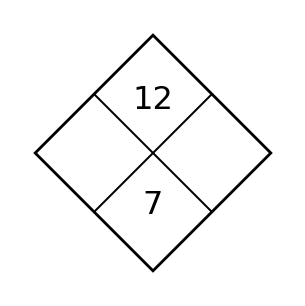
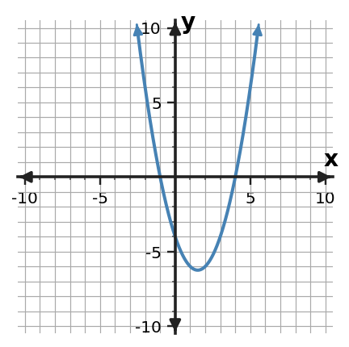
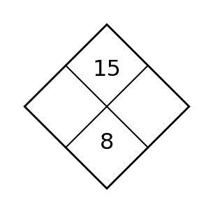

1
Complete the Diamond Problem: find two integers whose product is 12 and whose sum is 7.

Complete the Diamond Problem: find two integers whose product is 12 and whose sum is 7.

Solve $\displaystyle x^2+2x-1=0$ using the quadratic formula. Give exact solutions.
For $\displaystyle 2x^2-4x+2=0$, compute the discriminant and use it to state how many real solutions the equation has.
A height model leads to the equation $\displaystyle 4t^2-20t-11=0$ for possible times when an object is at ground level, where $t$ is measured in seconds and $t\ge 0$. Use the quadratic formula and interpret the meaningful solution.
Use the table to decide whether the relationship is exponential growth or exponential decay. State the constant ratio that supports your decision.
| x | y |
|---|---|
| 0 | $\displaystyle 8$ |
| 1 | $\displaystyle 6$ |
| 2 | $\displaystyle \frac{9}{2}$ |
| 3 | $\displaystyle \frac{27}{8}$ |
| 4 | $\displaystyle \frac{81}{32}$ |
The sequence is $\displaystyle 81, 27, 9, 3, \ldots$ . Find the next two terms and explain whether the pattern shows exponential growth or decay.
Solve $\displaystyle x^2-4x+1=0$ using the quadratic formula. Give exact solutions.
Factor $\displaystyle 9x^2-16$ completely.
A quantity increases by 8% each period. Write the multiplicative factor used from one period to the next.
For $\displaystyle 3x^2+2x+1=0$, compute the discriminant and use it to state how many real solutions the equation has.
Factor $x^2+6x+9$ completely.
Identify the special factoring pattern in $x^2+10x+25$ and factor the expression.
Complete the Diamond Problem: find two integers whose product is 18 and whose sum is 9.

Solve $(x+3)(x-5)=0$ and state the two zeros.
A quadratic model is $h(t)=(t-1)(t-5)$. Find the zeros. If $t$ represents time, identify which zero(s) could be meaningful when $t\ge 0$.
Use the zero-product property to solve $(3x+9)(x-5)=0$.
Write an exponential equation of the form $y=a(b)^x$ for the table.
| x | y |
|---|---|
| 0 | $\displaystyle 9$ |
| 1 | $\displaystyle 15$ |
| 2 | $\displaystyle 25$ |
| 3 | $\displaystyle \frac{125}{3}$ |
A medicine dose begins with 225 milligrams and decreases by 35% each hour. Write an exponential equation for the amount after $t$ hours.
Solve $(x-2)(x-7)=0$ and state the two zeros.
Factor $\displaystyle 15x^4+25x^2$ completely by removing the greatest common factor.
For $f(x)=6(2)^x$, identify the initial value and the growth or decay factor.
A quadratic model is $h(t)=(t-2)(t-6)$. Find the zeros. If $t$ represents time, identify which zero(s) could be meaningful when $t\ge 0$.
Factor $\displaystyle 12x^2+18x$ completely using the greatest common factor.
A student claims $\displaystyle 6x^2+9x=3x(2x+2)$. Determine whether the claim is correct. Verify by multiplication and, if needed, give the correct factored form.
Complete the Diamond Problem: find two integers whose product is 20 and whose sum is 9.

Solve $x^2+6x+5=0$ by completing the square.
Rewrite $y=x^2+6x+2$ in vertex form by completing the square, then state the vertex.
Solve $(x+3)^2=16$ by using the square-root step that appears after completing the square.
For $f(x)=8(\frac{4}{5})^x$, complete a key-point table for $x=-1,0,1,2$. Use the points to describe the graph as growth or decay.
Make a small table of key points and sketch $y=2(\frac{3}{4})^x$. Label the $y$-intercept and horizontal asymptote.
Solve $x^2+8x+7=0$ by completing the square.
For $f(x)=(x+4)(x+1)$, find the zeros and state the corresponding $x$-intercepts.
Without graphing every point, identify the $y$-intercept of $f(x)=12(\frac{3}{4})^x$ and explain how you know.
Rewrite $y=x^{2} + 8 x + 11$ in vertex form by completing the square, then state the vertex.
A monic quadratic has zeros $x=-2$ and $x=4$. Write the function in factored form and identify its $x$-intercepts.
The graph crosses the $x$-axis at $x=-1$ and $x=4$. Write a possible monic quadratic in factored form and explain how the factors encode the intercepts.

Complete the Diamond Problem: find two integers whose product is 15 and whose sum is 8.

Choose an efficient method—factoring, completing the square, or quadratic formula—to solve $\displaystyle 2x^2+x-4=0$. Solve and briefly justify your method choice.
For $x^2-2x-7=0$, compare two possible solving methods and choose the more efficient one. Then solve.
Which solving method would you choose first for $\displaystyle 3x^2-12x=0$? Explain the structural clue, then solve.
Classify the relationship represented by the table as linear, quadratic, or exponential. Cite the output pattern that supports your choice.
| x | y |
|---|---|
| 0 | $\displaystyle 2$ |
| 1 | $\displaystyle 3$ |
| 2 | $\displaystyle \frac{9}{2}$ |
| 3 | $\displaystyle \frac{27}{4}$ |
| 4 | $\displaystyle \frac{81}{8}$ |
Classify $y=x^2-3x+1$ as linear, quadratic, or exponential. Identify the structural feature of the equation that supports your answer.
Choose an efficient method—factoring, completing the square, or quadratic formula—to solve $x^2-7x+12=0$. Solve and briefly justify your method choice.
For $y=(x+2)(x-6)$, name the quadratic form and state one key feature that this form reveals directly.
Graphs A, B, C, and D show different function-family behavior. Identify the linear graph, the quadratic graph, and the two exponential graphs. For one choice, explain the graph feature you used.

For $\displaystyle x^{2} - 12 x + 29=0$, compare completing the square with the quadratic formula. Which is more efficient here, and why? Then solve.
Rewrite $$x^2+6x+5$$ in factored form. Then state what feature becomes easier to read from the new form.
A problem asks for the starting value $f(0)$. Which quadratic form would you prefer to use first, and why?
Complete the Diamond Problem: find two integers whose product is 24 and whose sum is 10.

A quadratic model is $h(t)=-16(t-2)^2+70$. Identify the vertex and interpret its meaning in the context of the model.
A quadratic situation is modeled by $Q(t)=-2(t-0)(t-5)$. Find the zeros and explain what the positive zeros could represent in a context where $Q(t)=0$ marks an event.
A projectile model has a positive value at $t=0$, rises to a maximum, then returns to height 0. Name the quadratic features that represent the starting height, maximum, and landing time.
Estimate a reasonable exponential multiplier from the data by comparing consecutive output ratios.
| x | y |
|---|---|
| 0 | 100 |
| 1 | 80 |
| 2 | 64 |
| 3 | 51 |
Build an exponential model $y=a(b)^x$ from the table. Identify both parameters.
| x | y |
|---|---|
| 0 | $\displaystyle 16$ |
| 1 | $\displaystyle \frac{32}{3}$ |
| 2 | $\displaystyle \frac{64}{9}$ |
| 3 | $\displaystyle \frac{128}{27}$ |
A quadratic model is $P(x)=-3(x-4)^2+90$. Identify the vertex and interpret its meaning in the context of the model.
Factor $x^2+x-12$ completely.
A data model is $M(t)=8(\frac{3}{2})^t$. Predict $M(5)$ and interpret the result as a model prediction.
A height model is $H(t)=-t(t-8)$. Find the intercepts where $H(t)=0$ and interpret the nonnegative times in context.
Factor $\displaystyle 2x^2+7x+3$ completely.
Find two integers whose product is $-12$ and whose sum is $\displaystyle 1$. Explain how this pair would help factor a quadratic trinomial.